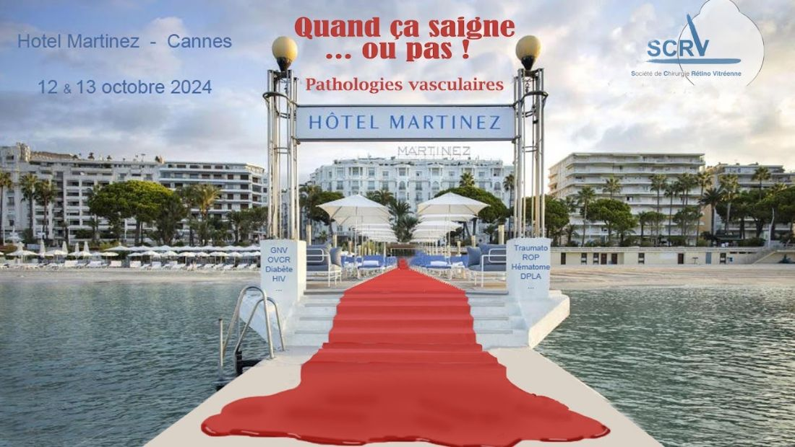
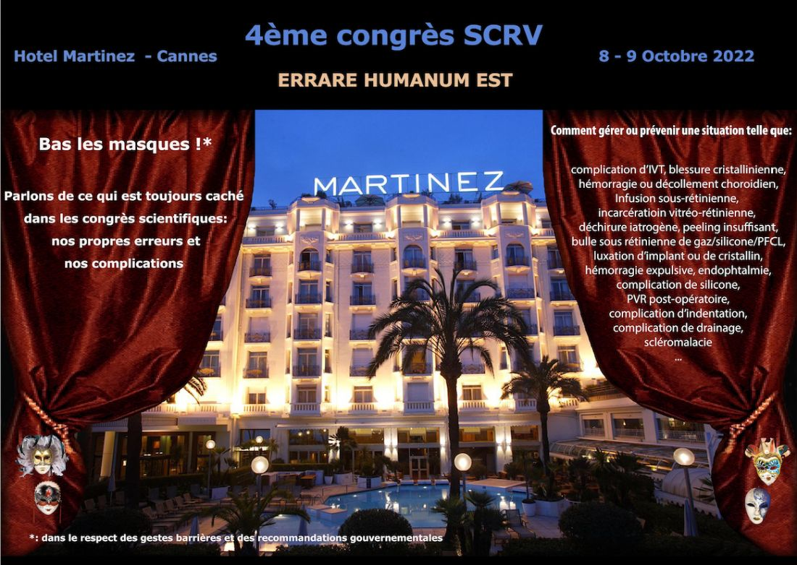
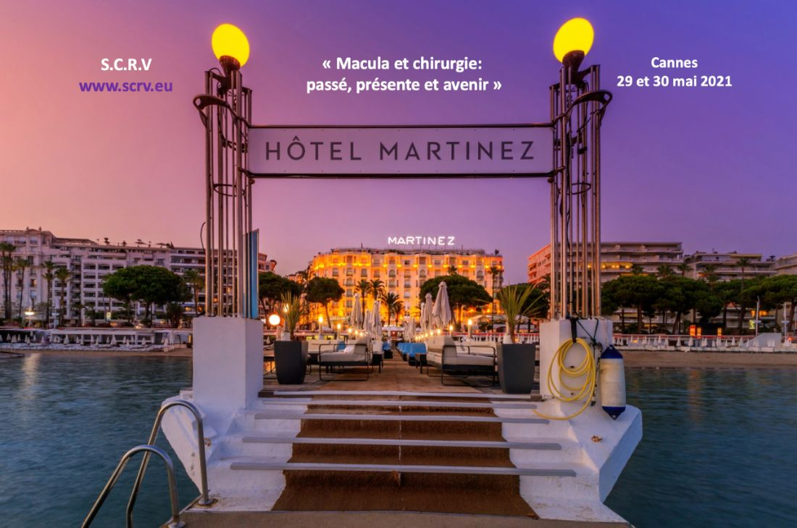

Bibliothèque
Films chirurgicaux
Les vidéos des réunions de la SCRV et le cours en ligne sur la chirurgie maculaire.

Cannes · 15 et 16 novembre 2025
Décollement de rétine
- Mise au point sur les stratégies dans le DRDr Ducournau
- Enquête sur les habitudes des chirurgiens de la SCRV en 2025Dr Drimbea
- Résultats de l’étude SCRV DR 2025Dr Drimbea
- Just a few comments on a shared case reportDr Singh
- Incarcération vitréenne: sémiologie et diagnosticDr Portmann
- Indentation et incarcération vitréenneDr El Khoury
- Indication du tamponnement par silicone dans le DRDr Drimbea
- Coup de foudre à Not seeing Hill: Quand la foudre frappe 2 fois au même endroitDr Elahi
- DR déchirure géante. Quelle stratégie thérapeutique adopter ?Dr Benzerroug
- Où mettre l’indentation ?Dr Guillaubey
- Ma stratégie de prise en charge des décollement de rétineDr Naoun
- DR de l’enfantDr Chapron
- Décollement de rétine récidivantDr Bec
- DR BilatéralDr Degoumois
E-learning
La chirurgie maculaire en 8 modules
Le cours du Dr Didier Ducournau sur la membrane épirétinienne et le pelage de la limitante interne.
- Introduction
- M1 – Qu'est-ce qu'une membrane épirétinienne idiopathique ?
- M2 – Le pelage de la limitante interne, comment ça marche
- M3 – Résultats du traitement de la membrane à l'œdème
- M4 – Indications chirurgicales dans l'œdème maculaire
- M5 – Choix chirurgicaux pour faire la vitrectomie
- M6 – La vitrectomie
- M7 – Coloration des tissus
- M8 – Pelage de la limitante interne
Réunions précédentes




- Le décollement dans tous ses étatsCannes · 22 et 23 mars 2019
- Vitrectomie : principes, techniques et moyens de visualisationCannes · 17 et 18 mars 2018
- Didier Ducournau, 40 années de passionLa Baule · 1er et 2 avril 2017
- HémorragiesArchives
Bibliothèque par pathologie
Vitrectomie, décollement de rétine, chirurgie maculaire, rétinopathie diabétique, traumatologie, segment antérieur.
ParcourirBibliothèque par auteur
Plus de quarante chirurgiens ont partagé leurs films.
ParcourirPubliez vos films. Mettez votre film sonorisé (ou votre présentation commentée) sur YouTube, puis envoyez le lien au Dr Didier Ducournau : didierducournau@gmail.com
Envoyer un film